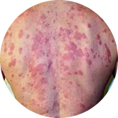
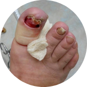

Грибок – это опасная инфекция
которая угрожает вам и вашим близким, ведь с каждым днем грибок приводит к:

Сложным формам аллергии
Может появится сильная реакция на на привычную пищу, одежду, средства гигиены

Потере ногтя и ампутации пальца
После полного разрушения ногтя грибок распространяется на палец, что приводит к его ампутации
Может привести к повреждениям мозга, слепоте, отказу печени, почек и сердца
Статистика: каждые 60 секунд врачи диагностируют опасные поражения внутренних органов, вызванные грибком, у 1-го пациент